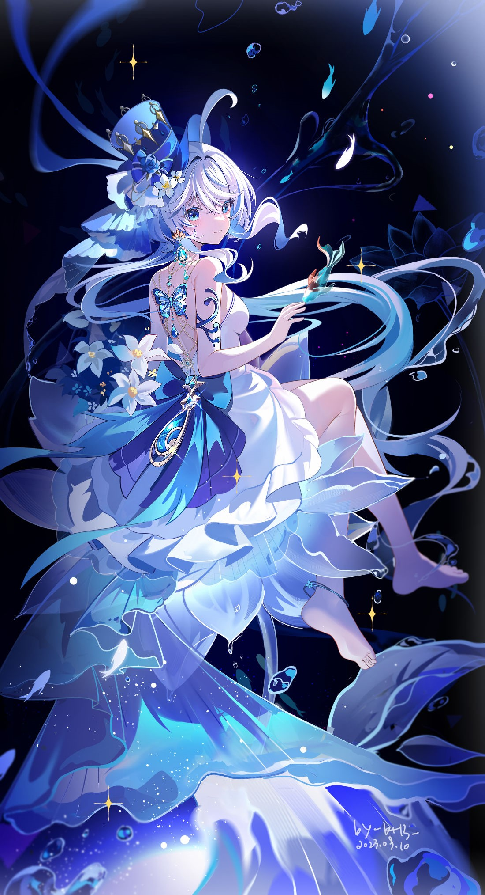

Birthday: 13 de Octubre
Elemento: Hydro
Arma: Espada
Región: Fontaine
Focalors, conocida públicamente como Furina, es la Arconte Hydro y la figura más influyente de Fontaine. Su presencia es teatral, carismática y siempre bajo los reflectores, pues durante años ha representado el papel de una diosa caprichosa y extravagante. Sin embargo, tras esa fachada se esconde una verdad mucho más compleja: un sacrificio silencioso, una carga que ha llevado en soledad y un profundo deseo de proteger a su nación, incluso si eso significa renunciar a su propia identidad.
「El juicio no es solo un espectáculo para el público. Es el reflejo de nuestras decisiones, de nuestras dudas… y de aquello que tememos enfrentar.」 — Pensamiento de Focalors mientras observa las aguas de Fontaine.